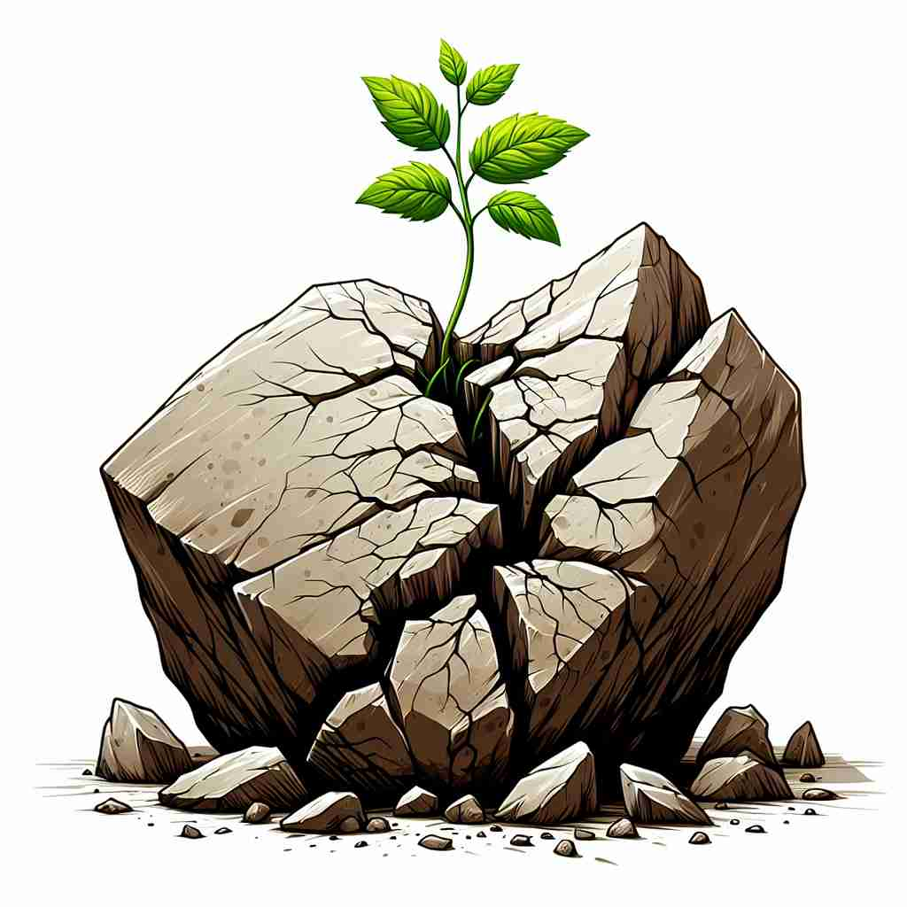

💬 The tree's resilience is evident as it grows green leaves after the storm. 这棵树的韧性显而易见，在暴风雨过后又长出了绿叶。

💬 The plant shows resilience by growing from the cracked stone. 植物从裂开的石头中顽强生长，展现出坚韧的生命力。
💬 The tree's resilience is evident as it grows green leaves after the storm. 这棵树的韧性显而易见，在暴风雨过后又长出了绿叶。
💬 The plant shows resilience by growing from the cracked stone. 植物从裂开的石头中顽强生长，展现出坚韧的生命力。
🧠 想象一个弹簧被压缩后迅速恢复原状的画面。'resilience'就像这个弹簧，核心含义是'快速回弹或恢复的能力'。无论是物体、生态系统、个人还是组织，都可以展现这种'弹性'。从物理特性扩展到心理、社会和经济领域，'resilience'描述了在面对压力或困难后迅速恢复并保持良好状态的能力。记住这个'弹簧'的意象，可以帮助你理解和记忆'resilience'的各种用法。
🔈 [rɪ'zɪlɪəns]
🗝️ n. the ability to quickly return to a previous good condition after problems 迅速恢复到之前良好状态的能力。
🎭 在一个风暴过后的村庄里，大树被连根拔起，房屋受到了损坏。村民们迅速展开修复工作，不到一周，村庄焕然一新，回到了之前的繁荣景象，这体现了'resilience'——快速恢复到良好状态的能力。
💬 The resilience of the forest ecosystem after the fire was remarkable. 火灾后森林生态系统的恢复力令人瞩目。
🌳 由前缀 "re-"（表示再次或回归）加上词根 "sil"（指跳跃）和后缀 "-ence"（名词后缀）组成，表示 "弹性，恢复力"。
💡 记忆 "resilience" 时，可以联想到 "重新反弹" 的意思，即在压力或逆境下能够恢复原状，将其与物理弹性的概念联系起来，帮助理解其精神上的"恢复力"。
🗝️ n. the ability to become strong, happy, or successful again after a difficult situation or event 从困难的情况或事件中再次变得强大、快乐或成功的能力
🎭 一个年轻的运动员在比赛中摔倒，但他没有放弃。经过数月的努力和训练，他重返赛场并赢得了冠军，展示了'在困难情况后重新变得强大、快乐或成功的能力。
💬 She showed great resilience in overcoming her financial setbacks. 她展现出了极大的韧性，克服了财务上的挫折。
🤔 从物理特性延伸到心理和社会层面的"弹回"能力
🗝️ n. the quality of being able to return quickly to a previous good condition 迅速恢复到先前良好状态的能力
🎭 在一场意外大雨后，学校的操场被水淹没。校工们连夜抢修，第二天学生们就能在干燥的操场上继续活动，这体现了'快速恢复至良好状态的特质。
💬 The resilience of the stock market surprised many economists. 股市的韧性让许多经济学家感到惊讶。
🤔 强调快速恢复的特质
🗝️ n. the capacity to recover quickly from difficulties 迅速从困难中恢复的能力
🎭 一个小型企业由于经济下行遭遇严重损失，但经过管理层的调整和员工的努力，他们不仅度过了难关，还扩大了业务，展示了'在困境中迅速恢复的能力。
💬 The company's resilience during the economic downturn impressed investors. 公司在经济低迷期的韧性给投资者留下了深刻的印象。
🤔 聚焦于从困难中恢复的能力
🗝️ n. the ability of a substance or object to spring back into shape 物质或物体恢复形状的能力
🎭 在一个理科实验室里，一位科学家展示一种新型材料。她将材料压扁后松开，它迅速恢复原状，完美展现了'物质或物体恢复原形的能力。
💬 The resilience of rubber makes it ideal for manufacturing tires. 橡胶的韧性使其成为制造轮胎的理想材料。
🤔 回到物理学上的原始含义